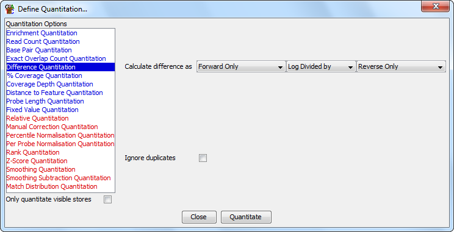

The difference quantitation quantitates your data based on the relative levels of reads on different strands.
It can be useful to use the strand of a read to signify some other property of your sequence (eg methylated / unmethylated or exact match vs SNP). This quantitation method then allows you to look for enrichment of this kind of information in a way which accounts for overall biases in the distribution of sequences.

The options you have for this module are:
For the divide, and log divide options the quantitation will actually add 1 to both of the counts used to avoid getting a divide-by-zero error, so the value you see may be slightly off from what you expect - especially for probes with low absolute counts (from which you probably shouldn't be calcuating this sort of value anyway).